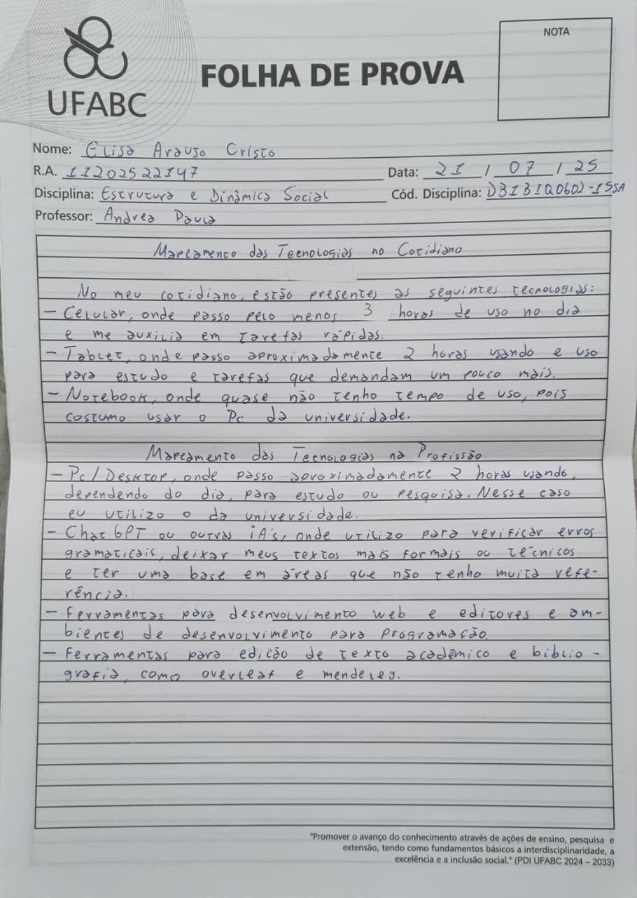

zimes.dev
Universidade Federal do ABC
Esta é uma página dedicada à divulgação de conteúdos relacionados à minha graduação.
Nela, compartilharei materiais, reflexões e realizações ao longo da minha trajetória.

Síntese crítica e autoavaliação dos aprendizados
Estrutura e Dinâmica Social | 04-08-2025
Na aula final da disciplina Estrutura e Dinâmica Social, realizada em 04 de agosto de 2025, realizamos
uma atividade de reflexão e autoavaliação com base nos conhecimentos construídos ao longo do curso. Foi
um momento dedicado à análise crítica das experiências individuais à luz dos conceitos abordados, com
foco na maneira como as estruturas sociais influenciam a vida dos sujeitos.
Durante a atividade, revisitei minha trajetória, considerando marcadores sociais como gênero, classe,
raça, território, religião e sexualidade. Refleti sobre como esses elementos estruturam oportunidades
e experiências, ampliando meu entendimento sobre desigualdades, diversidade e identidade. O conceito
de interseccionalidade, estudado a partir de Kimberlé Crenshaw, foi essencial para compreender como
diferentes opressões se combinam nas vivências cotidianas.
Além disso, foram discutidos temas como:
- Cultura, religiosidades e identidades sociais
- Desigualdades sociais e relações étnico-raciais
- Preconceitos, estereótipos e etnocentrismo
- Contribuições das religiões na sociedade
- Crise climática, tecnologias e justiça social
As atividades realizadas ao longo da disciplina, como trocas de objetos simbólicos, narrativas pessoais
e textos teóricos, contribuíram para o desenvolvimento de uma postura crítica, reflexiva e empática
diante das estruturas sociais.
Finalizo a disciplina com uma compreensão mais profunda sobre meu lugar no mundo e sobre como as dimensões
sociais moldam nossas vidas. Essa experiência acadêmica me transformou enquanto estudante, cidadã e futura profissional.
Minha atividade:
Avaliação Final
No começo da disciplina, eu me via como uma pessoa em constante aprendizado, com uma identidade marcada por multiplas
vivências. Uma mulher branca da periferia de São Paulo, de classe social baixa, com uma configuração familiar extensa e
dinâmica. Além disso, sempre tive uma forte valorização pela diversidade cultural e pelas oportunidades que a educação
pode oferecer para a construção da identidade. Apesar de já reconhecer a importância do contexto social e cultural na
formação da subjetividade, eu ainda estava buscando as ferramentas teóricas para aprofundar essas questões e entender como
as estruturas sociais nos atravessam.
Antes da disciplina eu só tinha um conhecimento básico sobre alguns temas. Em relação às tecnologias, eu uso o celular e
tablet mais frequentemente e o notebook de forma esporádica, especialmente nas atividades da universidade. Profissionalmente,
utilizo o PC, principalmente para estudo, pesquisa e desenvolvimento web, com ferramentas como Mendeley, VSCode, Eclipse IDE,
DBeaver e outros. Sobre a crise climática, eu sabia que ela é provocada pela ação humana, principalmente pela queima de
combustíveis fósseis (que também libera CO2 e contribui para o aquecimento global), e que também afeta a vida e a natureza,
além de agravar as desigualdades sociais. As apresentações feitas pela Elisa me fez perceber o quanto a pesquisa nas áreas de
petróleo e energia limpa pode contribuir com soluções para a crise, e isso despertou em mim um novo interesse por esses temas.
Além disso, já tinha tido contato com o conceito de interseccionalidade, que estudei no ensino médio, proposto por Kimberlé
Crenshaw e que explica como marcadores sociais como raça, gênero e classe se entrelaçam e influenciam as experiências e
trajetória da vida das pessoas. Esse conceito me ajudou a entender melhor as dinâmicas sociais antes e depois dessa disciplina.
Ao longo das aulas, esses conhecimentos ganharam maior profundidade teórica. Passei a mapear minhas identidades e culturas com
base em categorias como religião, sexualidade, gênero, classe social, nacionalidade e outros, reconhecendo como essas dimensões
estruturam experiências e oportunidades. As atividades com troca de objetos e relatos pessoais permitiram me enxergar como
parte ativa da construção social, dando novos sentidos à memória.
Agora, ao final da disciplina, percebo como o aprendizado foi transformador. Eu passei a desenvolver um olhar mais humanizado
e crítico sobre as diferentes estruturas sociais que influenciam a vida das indivíduas. A disciplina me proporcionou uma visão
mais ampla sobre temas como culturas, diversidades, desigualdades, relações étnico-raciais, etnocentrismo, preconceitos,
estereótipos, interseccionalidade, relações de gênero, sexualidades, configurações familiares, religião e religiosidades.
Passei a compreender como estas questões não são apenas teóricas, mas sim práticas que podem ser aplicadas no meu cotidiano
e no meu desenvolvimento como ser humano parte de uma sociedade.
Acredito que aproveitei bem a disciplina. Participei das aulas, realizei as atividades propostas e me envolvi com as leituras,
os vídeos e as discussões. As atividades das mais práticas, como as narrativas com objetos e a história de vida e o blog,
me permitiram refletir sobre a minha própria trajetória e sobre como os conceitos discutidos em aula se aplicam à minha
vivência pessoal e coletiva. Foi uma experiência marcante e transformadora, pois revisei conceitos já estudados, como a
interseccionalidade, mas com mais profundidade e novas perspectivas.
O que eu sinto agora é que a disciplina me proporcionou uma compreensão mais sólida sobre a estrutura e dinâmica social.
Hoje, entendo melhor como as estruturas sociais moldam as experiências individuais e como é importante ter uma postura crítica
e empática diante das diferenças e desigualdades que existem no mundo. A Elisa que entrou na primeira aula era curiosa e
sensível, mas a Elisa que sai da última aula está mais consciente e preparada para atuar de forma crítica, reflexiva e
comprometida com as questões sociais que permeiam a nossa sociedade e, com isso, acredito que a disciplina cumpriu com o
seu objetivo e além disso as aulas foram muito bem feitas, resultando em um conceito A.
Link do site: zimes.netlify.app
.jpeg)
.jpeg)
Crise climática e contemporaneidades
Estrutura e Dinâmica Social | 31-07-2025 e 28-07-2025
Aula 13 - 31/07/2025
Temas:
- Pensamento decolonial, saberes ancestrais e análises das estruturas e dinâmicas sociais contemporâneas
Objetivos de Aprendizagem:
- Conhecer outras perspectivas de análise das estruturas e dinâmicas sociais no século XXI;
- Compreender aspectos emergentes acerca de formações interdisciplinares e atuações profissionais frente às transformações das
estruturas e dinâmicas da sociedade atual.
Leituras Aula 13: (clique)
MOORE, Carlos. Racismo e sociedade: novas bases epistemológicas para entender o racismo, Capítulo 9
Vídeos Aula 13: (clique)
Os vídeos são um interessante recurso para te ajudar a compreender os temas e discussões com novas perspectivas
Aula 12 - 28/07/2025
Temas:
- Crise climática e
- Decrescimento, pós-crescimento
Objetivos de Aprendizagem:
- Estudar a crise climática e o Antropoceno, bem como suas relações com o modelos de desenvolvimento da ciência e
tecnologia na sociedade capitalista e seus impactos nas estruturas e dinâmicas sociais contemporâneas;
- Conhecer quais são os grupos que apresentam propostas de enfrentamento da crise climática, com vistas a alterar
as dinâmicas e estruturas sociais contemporâneas;
- Aprender sobre outras propostas de desenvolvimento econômico e seus impactos nas estruturas e dinâmicas sociais
que considerem as perspectivas do decrescimento e do pós-crescimento.
Leituras Aula 12: (clique)
Palestra Érica Guerreiro: Mudanças Climáticas e Meio Ambiente
Antropoceno: a Era do colapso ambiental, José Eustáquio Diniz Alves, CEE-Fiocruz, 2020
Introdução - Decrescimento, Giorgos Kallis, Federico Demaria e Giacomo D'Alisa, In: Decrescimento: vocabulário para um novo mundo, Giacomo D'Alisa e Giorgos Kallis, pp. 21-42
Vídeos Aula 12: (clique)
Decrescimento
Crescimento econômico pra que? PRA QUEM? - PorQueNão? conversa sobre Decrescimento
Minha atividade:
Mapeamento do conhecimento prévio sobre os temas
O que eu sabia sobre a crise climática é que são mudanças no clima da Terra, causadas principalmente pela ação humana,
que gera o aquecimento global (pela queima de combustíveis fósseis) que, por sua vez, libera gases do efeito estufa. Gases
como o CO2 e outros que ficam presos na atmosfera e fazem o planeta esquentar. Isso impacta tanto na vida humana, quanto na
natureza (animais, meio ambiente, mar, vegetação etc), na alimentação e na desigualdade social.
Com a apresentação da Erica, percebi que a pesquisa nas áreas de petróleo e energia limpa contribui muito para encontrarmos
uma possível solução, e nunca passou pela minha cabeça que poderia existir trabalhos como o da Erica e que nós também podemos
fazer parte disso. Fiquei esperançosa com as apresentações.
Carreira profissional e possíveis atividades em torno da crise climática
Quero seguir na área da tecnologia e acredito que seria importante e do meu interesse trabalhar em uma pesquisa que envolva
o uso de sensores e inteligência artificial para monitorar variáveis ambientais, como temperatura, umidade, ar e entre outras,
para prever eventos, gerar dados e ajudar comunidades.
Estado, política e tecnologias
Estrutura e Dinâmica Social | 21-07-2025 e 17-07-2025
Aula 11 - 21/07/2025
Temas:
- Trabalho e tecnologias, uberização, economia de compartilhamento, cooperativismo de plataforma
- Big data e inteligência artificial
Objetivos de Aprendizagem:
- Compreender quais os impactos da ciência e da tecnologia e suas transformações no mundo do trabalho e do desenvolvimento
capitalista, alterando as estruturas e as dinâmicas sociais contemporâneas;
- Aprender sobre as relações entre tecnologias de informação e comunicação, inteligência artificial e ciência de dados
(produção, coleta e análises de dados) e seus impactos econômicos, sociais, políticos e culturais.
Leituras Aula 11: (clique)
Palestra Érica Guerreiro: Trabalho e Tecnologias
Cooperativismo de plataforma. Contestando a economia do compartilhamento corporativa, Trebor Scholz
Alfabetização em Dados, Mariana Fernandes e Andrea Paula S. O. Kamensky, Plataforma Digital Plural, UFABC
Vídeos Aula 11: (clique)
Gig - A uberização do trabalho (trailer)
Uberização do trabalho: entrevista sobre documentário
Sociedade do Cansaço
Minha atividade:
Mapeamento das Tecnologias no Cotidiano
No meu cotidiano, estão presentes as seguintes tecnologias:
- Celular, onde passo pelo menos 3 horas de uso no dia e me auxilia em tarefas rápidas.
- Tablet, onde passo aproximadamente 2 horas usando e uso para estudo e tarefas que demandam um pouco mais.
- Notebook, onde quase não tenho tempo de uso, pois costumo usar o Pc da universidade.
Mapeamento das Tecnologias na Profissão
- Pc/Desktop, onde passo aproximadamente 2 horas usando, dependendo do dia, para estudo ou pesquisa. Nesse caso eu
utilizo o da universidade.
- Chat GPT ou outras IAs, onde utilizo para verificar erros gramaticais, deixar meus textos mais formais ou técnicos e
ter uma base em áreas que não tenho muita referência.
- Ferramentas para desenvolvimento web e editores e ambientes de desenvolvimento para programação.
- Ferramentas para edição de texto acadêmico e bibliografia, como overleaf e mendeley.

Aula 10 - 17/07/2025
Temas:
- Democracia, Estado, políticas públicas, cidadanias
Objetivos de Aprendizagem:
- Compreender as diversas construções teóricas em torno das ideias de democracia e de cidadania;
- Aprender sobre os conceitos de políticas públicas e seu papel nas estruturas e dinâmicas sociais contemporâneas.
Leituras Aula 10: (clique)
Palestra Érica - Políticas Públicas
DELEUZE, Gilles. Post-scriptum sobre as sociedades de controle. Conversações. São Paulo: Ed. 34, 1992
GIDDENS, Anthony. Sociologia. 6ª ed., Porto Alegre, RS: Artmed, 2008. Cap. 14 - O governo e a política e Cap. 21 - O pensamento teórico da Sociologia
CASTELLS, Manuel. Sociedade em Rede. Do conhecimento à política, 2005, pp.17-30 (vários autores)
Vídeos Aula 10: (clique)
A obsolescência da educação, Manuel Castells
Escola e Internet, Manuel Castells
Sociedade de controle
A História dos Direitos Humanos
Minha atividade:
Minha Política Pública
Pode-se pensar em uma política pública que tenha como objetivo enfrentar a dificuldade de participação e representação
feminina nas áreas de Ciência, Tecnologia, Engenharia e Matemática (STEM), reconhecendo que o marcador social de ser mulher
atua como fator estruturante de exclusão e desigualdade nessas áreas. A proposta teria o nome de "STEMinas" e se organizaria
em cinco eixos. O primeiro seria a transformação da educação básica com perspectiva de gênero, promovendo a capacitação
docente, a reformulação de materiais didáticos e a criação de grupos/clubes científicos voltados para meninas. O segundo
eixo iria visar o acesso e permanência no ensino superior, com ações afirmativas como cotas nessas áreas para mulheres (como
já ocorre em algumas instituições, por exemplo o IMPA Tech), além de bolsas e redes de apoio para alunas em cursos
historicamente masculinizados. O terceiro eixo focaria em incentivar a trajetória profissional e científica de mulheres por
meio de editais específicos, apoio à iniciação científica e programas de intercâmbio. O quarto eixo trataria do enfrentamento
da discriminação estrutural, com campanhas nacionais de valorização da mulher cientista, ouvidorias especializadas e políticas
institucionais de equidade. Por fim, o quinto eixo estabeleceria mecanismos de monitoramento para acompanhar indicadores de
gênero nas STEM. Ao articularmos educação, equidade e transformação cultural, buscamos com essa política, corrigir
desigualdades históricas e ampliar a diversidade na ciência e na tecnologia, fundamentais para o desenvolvimento justo do país.
Conflitos e Movimentos
Estrutura e Dinâmica Social | 14-07-2025 e 07-07-2025
Aula 9 - 14/07/2025
Temas:
- Desobediência civil, violência estrutural, comunicação não violenta
- Movimentos políticos, sociais, culturais, sindicais, identitários, ambientais no Brasil e no mundo
Objetivos de Aprendizagem:
- Conhecer como se manifestam os conflitos sociais e seus movimentos sociais, culturais e políticos na sociedade contemporânea;
- Aprender sobre noções de mediações e proposições em torno de conflitos sociais, inerentes à organização das sociedades
contemporâneas.
Leituras Aula 11: (clique)
BUTLER, Judith. Corpos em aliança e a política das ruas. Rio de Janeiro: Civilização Brasileira, 2018, pp.75-109
A vida não é útil, Ailton Krenak
O Bem Viver e os Direitos da Natureza
Vídeos Aula 11: (clique)
A vida não é útil, Ailton Krenak
A história de vida do líder indígena Ailton Krenak
Aula 8 - 07/07/2025
Temas:
- Conflitos e suas múltiplas dimensões;
- Reconhecimentos de velhos e novos sujeitos, grupos e conflitos na contemporaneidade;
- Convivencialidade e Cuidado como modos de ressignificar conflitos.
Objetivos de Aprendizagem:
- Entender o que são os conflitos sociais e como estes fazem parte das dinâmicas e estruturas sociais;
- Compreender quais são os sujeitos, grupos e comunidades que fazem parte de alguns dos principais conflitos sociais na
atualidade e suas ligações com processos históricos que conformam as estruturas e dinâmicas sociais vigentes;
- Reconhecer os impactos econômicos, culturais, políticos, religiosos, étnico-raciais das dinâmicas dos conflitos sociais.
Leituras Aula 8: (clique)
Lugar de fala, o que é? - Giacomo Vicenzo
RIBEIRO, D. O que é lugar de fala. Belo Horizonte: Letramento, 2017
Convivencialidade e Cuidado, In: Decrescimento: vocabulário para um novo mundo, Giacomo D’Alisa e Giorgos Kallis, 2016, pp. 92-98; 102-107
Vídeos Aula 8: (clique)
O Bem Viver Indígena e o futuro da humanidade
Rigoberta Menchú: Hacia una vida en plenitud, Fundación de Estudios, Acción y Participación Social (Fedaeps) Equador
É uma mensagem muito simples, Universidade Federal do ABC, UFABC/SP, 2016
(Pre)Conceitos e (In)Diferenças, Universidade Estadual de Ponta Grossa, UEPG/PR, 2008
Minha atividade:
Parte 1 - Mapeamento de Conflitos
Começando pelos conflitos que estou diretamente envolvida, já tive que enfrentar desafios e passei por experiências não tão
boas por ser mulher, e principalmente na área que quero seguir, que é ciência da computação, isso gera um conflito por ser
uma área majoritariamente formada por homens. Sou de escola pública desde o ensino fundamental, e além de ter defasagem em
certas disciplinas, acabo me comparando com outros estudantes. Meu lado das emoções e sentimentos também tem conflitos, quando
na maioria das vezes eu acabo deixando de fazer o que quero para agradar o outro. E venho de uma família humilde, que não tem
tantos recursos financeiros e materiais, porém me deu uma boa base como pessoa.
Os conflitos que permeiam minha comunidade é ser um bairro periférico, onde ainda não há disponíveis muitos recursos culturais,
por exemplo. Não há muita infraestrutura também e muitos moradores se incomodam com festas noturnas que ocorrem.
No Brasil e no mundo, conflitos como as taxações feitas por Trump, as questões ambientais que acabam chegando não só na minha,
mas em outras comunidades também, a migração nos Estados Unidos, que pode afetar minha prima que mora lá e é brasileira e a
violência urbana no Brasil, em que já presenciei casos em supermercados.
Parte 2 - Conflitos e Soluções
Para os conflitos apresentados, tenho propostas para reduzir ou evitar, como estar participando de iniciativas e projetos
que incentivem a participação de mulheres e meninas nas áreas da STEM, daí eu contribuo e participo do Technovation Girls e
quero participar do coletivo mina da UFABC. Esse coletivo também se alinha com a parte de extensão da TamanduTech, que promove
conhecimentos em robótica para estudantes do ensino médio de escolas públicas. A divisão e reforma agrária é uma solução que
gostaria de fazer parte, onde já tive e quero manter contato com, por exemplo, o MST.
.jpeg)
Avaliação Parcial
Estrutura e Dinâmica Social | 02-07-2025
Nesta aula de Estrutura e Dinâmica Social, fui convidada a refletir sobre quem sou, como minha identidade é construída social
e culturalmente, e como ela pode se transformar ao longo da vida. A partir da atividade proposta, percebi o quanto aspectos
como gênero, raça, classe social, sexualidade, religião e território se cruzam na minha trajetória e moldam minha forma de
existir no mundo, uma abordagem que se conecta diretamente ao conceito de interseccionalidade, trazido por Kimberlé Crenshaw.
Compreendi a importância de ir além do multiculturalismo, reconhecendo o valor da interculturalidade, onde culturas não apenas
coexistem, mas dialogam e se transformam mutuamente. As falas de Ailton Krenak, ao criticar a ideia de uma humanidade única e
universal, e de Chimamanda Adichie, ao alertar sobre os perigos de uma "história única", me ajudaram a pensar na necessidade
de valorizar a alteridade, respeitar a diferença e cultivar a empatia.
Também percebi que, muitas vezes, posso ter contribuído com visões simplistas e reducionistas de outros grupos sociais, e que
é necessário um esforço constante para não cair nesse tipo de julgamento. A aula me mostrou que os conceitos de preconceito,
etnocentrismo, desigualdade, religiosidade, estereótipos e configurações familiares não são apenas teóricos, mas fazem parte
da realidade que vivo e da forma como me relaciono com o outro.
Entendi que desenvolver uma postura humanizada, crítica e empática não é apenas uma tarefa acadêmica, mas um compromisso de
vida. A disciplina tem me ajudado a aprofundar conhecimentos que já havia iniciado em outras fases da minha formação e, acima
de tudo, a enxergar a importância de aplicar esses aprendizados no meu cotidiano e nas relações que construo.
Minha atividade:
Avaliação Parcial
1. Atualmente, percebo que sou uma pessoa que está em constante aprendizado e por agora me identifico como uma mulher, branca,
de baixa classe social, da periferia, no processo de compreensão da minha sexualidade, com origens familiares em Minas Gerais
e Paraná, nascida em São Paulo e apaixonada pelas oportunidades que a educação pode oferecer. Considerando minha identidade,
a construção social em volta dela e que ela pode mudar enquanto a vida passa, meu mundo interno, minha subjetividade não é só
influenciada por um único contexto social e cultural. Por exemplo, evito focar somente no meu contexto familiar, claro que é
muito importante na minha vida, porém há uma diversidade muito grande que nos permite ir além do multiculturalismo, mas sim à
interculturalidade, onde há o reconhecimento de outras culturas e também a interação e transformação de culturas, promovendo
uma oposição da visão de que uma cultura é superior à outra. Como disse Ailton Krenak, devemos nos opor à ideia de uma
humanidade única e universal, nos proporcionando a atuação da alteridade ao reconhecer o outro como legítimo em sua diferença
e ter empatia e respeito às outras culturas, assim como Adichie propõe que a escuta do outro é essencial para evitar histórias
únicas que o estigmatizam. Assim, minha performance varia de contexto para contexto e em diferentes relações. Me configuro em
uma família extensa com pais separados, e sou filha, neta, sobrinha, prima, entre outros, e por exemplo, quando estamos
exercendo nossa fé, que não é baseada em religiões, mas sim no amor de Cristo (mesmo que antes éramos de religiões), eu atuo
com uma performance diferente do que na universidade, por exemplo.
2. Na estrutura e dinâmica social, esses três conceitos fazem parte de "um projeto de humanidade excludente e devastador",
segundo Krenak. E depois dessa disciplina percebi que poderia estar contribuindo com isso quando, por exemplo, tentava
reconhecer e entender um outro grupo social de forma generalizada e simples, quando na verdade cada indivíduo e grupo social
tem uma complexidade e não devem ser reduzidos a uma imagem única. Depois dessa disciplina procuro realmente compreender
com o devido respeito o "novo" ou "diferente" para mim, buscando não obter um entendimento raso e também aprender com isso,
pois gosto muito de aprender coisas novas.
3. Com essa disciplina, aprendi e continuo aprendendo, principalmente, a ter um olhar humanizado com o meu próximo, colocando-o
em uma posição de respeito e empatia, como se fosse um irmão, para assim poder entender sua complexidade. Os conceitos
apresentados na disciplina de culturas, diversidades, sociedades, interculturais, alteridade, diferença, desigualdades,
relações étnico-raciais, e etnocentrismo, preconceitos, estereótipos, interseccionalidades, relações de gênero, sexualidades,
configurações familiares, religião e religiosidades não são apenas conceitos que devem ser estudados em sala, e sim práticas
que devem ser tomadas. Acredito que ao longo do meu processo de formação, devo desenvolver esses e outros tópicos não somente
em aulas, mas enxergá-los como parte da Estrutura e Dinâmica Social na qual eu vivo e aplicá-los para me desenvolver como ser
humano e parte de uma sociedade.
4. Acredito que estou conseguindo fazer um bom aproveitamento da disciplina, em que venho nas aulas, realizo as atividades
propostas, tentando ter um certo aprofundamento a partir das leituras e vídeos e mesmo que não seja frequente, tento participar
na aula em si. Estou gostando de cursar essa disciplina e inclusive consegui rever tópicos que já havia estudado anteriormente
só que agora com mais profundidade e outras perspectivas, como o conceito de interseccionalidade introduzido por Kimberlé
Crenshaw que tinha estudado no ensino médio no Instituto Federal de São Miguel Paulista e também era um conceito importante
para a minha pesquisa na mesma instituição, onde trabalhávamos com a Tecnologia Social, seu potencial político, sua visão
interseccional e como poderíamos aplicá-la no nosso e em outros contextos. Por fim, está sendo uma experiência interessante e
marcante cursar a disciplina de Estrutura e Dinâmica Social, e acredito que o conceito a represente bem o que desenvolvi até
agora.
.jpeg)
.jpeg)
Família e Religiosidades
Estrutura e Dinâmica Social | 30-06-2025 e 23-06-2025
Aula 6 - 30/06/2025
Temas:
- Religião, ritual, performance
- Religiosidades
Objetivos de Aprendizagem:
- Compreender o que é religião e a diversidade religiosa existente na humanidade;
- Conhecer como as religiosidades impactam as estruturas e dinâmicas sociais.
Leituras Aula 6: (clique)
GIDDENS, Anthony. Sociologia. 6ª ed., Porto Alegre, RS: Artmed, 2008.(Cap. 2 - Cultura e Sociedade; Cap. 17 – Religião)
Perguntas e respostas sobre religiosidades, Andrea Paula S. O. Kamensky, UFABC
Vídeos Aula 6: (clique)
Documentário - Eduardo Coutinho - Santo Forte [Sincronizado]
O OUTRO TEATRO- do ritual à performance
PERFORMANCE AFRO- amostração
PERFORMANCE AMERINDIA: MEMÓRIA E IDENTIDADE
¿Qué es una performance? - Diana Taylor
Minha atividade:
Atividade Aula 5 - Continuação
Parte 3 - Documentário e Interseccionalidade
Em um dos relatos apresentados no documentário, Débora Maria Proença narra o episódio em que ao migrar de São Paulo para o
Paraná durante a infância, ela passou por dificuldades em sua escola. A professora, ao avaliar o desempenho dela, disse para
a mãe de Débora que ela "já sabia ler, escrever e fazer as operações básicas" e "para ser empregada doméstica, já estava de
bom tamanho". Esse trecho pode ser entendido a partir da interseccionalidade.
Nesse caso, temos os marcadores sociais de gênero, raça e classe sobrepostos, produzindo uma forma de opressão, onde o fato
da identidade de Débora enquanto mulher, negra e de uma camada social de baixa renda determinaram tanto a maneira como ela
foi recebida na escola quanto o "seu lugar social", que é limitado e normaliza a desigualdade.
Essa situação pode incidir também sobre a subjetividade da pessoa, o modo como ela se vê e constrói sua identidade, pois ao
ser exposta a esse tipo de opressão, pode acabar internalizando perspectivas que diminuem suas potencialidades.
Atividade Aula 6 - Religiosidade
Antigamente, minha família se identificava como católicos e seguiam as tradições e costumes dessa religião, isso antes de
eu nascer. Quando eu nasci, eles já se identificavam como evangélicos e frequentavam igrejas, e isso também foi passado para
mim desde pequena, que absorvi esse costume. Porém, atualmente nós não concordamos com o posicionamento e sistema religioso,
logo, nós continuamos acreditando no amor de Cristo, porém o templo não é um local, o templo somos nós.
Tive mais contato com essas religiões, porém pude conhecer outras, principalmente no ensino médio, como umbanda, candomblé,
islamismo, budismo e espiritismo.
.jpeg)
Aula 5 - 23/06/2025
Temas:
- Família e novas configurações familiares
Objetivos de Aprendizagem:
- Conhecer a diversidade de noções de família nos grupos humanos e como são as novas configurações familiares na sociedade
ocidental, estudando seus desdobramentos nas estruturas e dinâmicas de grupos e comunidades na sociedade contemporânea.
Leituras Aula 5: (clique)
Novas Configurações Familiares. Revista E. SP: Sesc, nº 233, novembro, 2015
GIDDENS, Anthony. Sociologia. 6ª ed., Porto Alegre, RS: Artmed, 2008. Capítulo 7 – As famílias
Minha atividade:
Parte 1 - Minha Configuração Familiar
Eu sempre fiz parte de uma família extensa, tanto quando meus pais eram casados e depois que eles se separaram também. Meus
avós materna e paterna tiveram grande (se não a maior) parte no meu desenvolvimento e criação, pois meus pais trabalhavam e
na parte da manhã minha avó materna ficava comigo até o horário da escolinha e depois minha avó paterna me buscava e ficava
comigo. Essa questão de ir de uma casa para outra não foi algo tão complicado porque mesmo morando em uma região periférica
a família inteira mora perto (talvez estar em uma região assim seja o motivo), então quando meus pais se separaram eu ainda
passava tempo com os dois, pois minha mãe morava em uma rua e meu pai na outra. Por parte de pai a família é muito grande,
contando com avós, tios, tias, primos, primas, de segundo grau, terceiro, entre outros, todos moram bem próximos e nos
consideramos família tanto pelo laço sanguíneo quanto por afinidade (como esposas e maridos de tios e tias). Por parte de mãe
a família é mais dispersa, onde tenho contato mais com a minha avó, tinha contato com meu avô antes dele falecer e tenho
contato com meu tio, a esposa dele e o filho dela também (que não é dele) e considero todos parte da minha família. Também
tenho primas que fazem parte da família e são filhas do meu tio por parte de mãe, porém estão nos Estados Unidos há mais ou
menos 20 anos, elas tiveram filhos por lá e uma é casada com um brasileiro e outra com um americano com a mãe japonesa.
Atualmente está difícil para uma delas, que é casada com o brasileiro, com a situação da imigração nos Estados Unidos com o
Trump e por eles não terem cidadania, estamos preocupados com isso.
Por fim, em um determinado e breve momento da minha vida tive uma família nuclear, pai, mãe e eu (durante o 1° ao 5° ano),
mas ainda sim outros parentes eram presentes, e agora com eles separados minha noção de família é muito maior.
Parte 2 - As configurações familiares da colega
A família da Carol sempre foi uma família nuclear, com o pai, a mãe, ela e o irmão mais velho. Até hoje seus pais estão
juntos e ambos chefiam a família. A mãe dela veio de uma família extensa, mas seu pai de uma família nuclear também.
.jpeg)
Relações de Gênero, Étnico-Raciais e Interseccionalidades
Estrutura e Dinâmica Social | 16-06-2025 e 09-06-2025
Aula 4 - 16/06/2025
Temas:
- Relações de Gênero
- Sexualidades
Objetivos de Aprendizagem:
- Conhecer como se constroem as relações de gênero e como estas engendram construções identitárias individuais e coletivas;
- Compreender o debate sobre identidades, pós-identidades, (des)identidades e seu impacto na construção de comunidades;
- Estudar o entrelaçamento entre as categorias de gênero e sexualidade e como estas influenciam as estruturas e dinâmicas sociais.
Leituras Aula 6: (clique)
CRENSHAW, K. A Intersecionalidade na Discriminação de Raça e Gênero. 2012 – Relações Raciais (1ª edição) Ação Educativa
Vídeos Aula 6: (clique)
Nós Deveríamos Todos Ser Feministas Chimamanda Ngozi Adichie
The urgency of intersectionality | Kimberlé Crenshaw
Políticas Públicas e Relações de Gênero na Escola
Políticas Públicas de Sexualidade na Escola
Aula 3 - 09/06/2025
Temas:
- Relações Étnico-Raciais
- Etnocentrismo, estereótipos, preconceitos
- Interseccionalidades
Objetivos de Aprendizagem:
- Conhecer acerca de como as relações étnico-raciais impactam e organizam as estruturas e dinâmicas sociais;
- Aprender os conceitos de etnocentrismo, estereótipos e como são construídos os preconceitos que conformam as estruturas e
dinâmicas sociais;
- Compreender o conceito de interseccionalidade e como este busca analisar as diferenças que são transformadas em desigualdades
nas estruturas e dinâmicas sociais;
Leituras Aula 5: (clique)
KRENAK, Ailton. Ideias para adiar o fim do mundo. SP: Cia. das Letras, 2019
Vídeos Aula 6: (clique)
Relações Étnico-Raciais na Educação
Minha atividade:
Aula 3 - Histórias e objetos
O objeto que eu trouxe para a dinâmica de hoje foi um bloco de anotações que ganhei da minha antiga escola, o Instituto Federal
de São Miguel Paulista. Esse foi um objeto que me acompanhou por um longo tempo, no dia em que eu o ganhei foi inesperado, pois
a escola nunca havia fornecido materiais ou similares, somente camisa e moletom. Nossa turma foi notificada de que haveria essa
distribuição na parte da tarde, o que gerou certo descontentamento pelas outras turmas que não conseguiam pegar pois estavam em
horário de aula (meu horário era o da manhã). Junto com o bloco de anotações também ganhamos uma bolsa de lado e uma pasta,
porém o que mais utilizei foi o bloco.
Ano passado (2024) foi quando eu mais utilizei, para os vestibulares e rascunhos do que eu estudava, e esse ano continuei
usando, inclusive ele estava manchado por uma carta que estava dentro dele e caiu água, manchando o bloco. Eu trouxe ele
porque senti que eu deveria concluir essa etapa, que a missão dele tinha sido cumprida.
O objeto que eu peguei foi um pequeno espelho quadrado com a borda arredondada. Eu peguei ele porque acho muito útil e bom para
colocar na minha bolsa de maquiagem, porém a história ficou diferente no minuto em que peguei o espelho, porque eu deixei ele
cair e ele quebrou. De primeira, pensei que seria o fim, contudo a minha percepção mudou logo após que terminei de recolher os
cacos, talvez a história que a dona do espelho teve possa ser diferente comigo, até porque o espelho ter quebrado não significa
que ele está inutilizável, eu posso dar uma nova forma para ele, por exemplo. Talvez isso não tenha acontecido à toa.
A pessoa que trouxe o espelho se chama Carol. A história e trajetória dela com esse objeto foi longa começando há
aproximadamente 17 anos, quando ela ainda era uma criança. Esse espelho veio junto de uma necessaire que ela se apegou, então
o espelho andava sempre junto com ela até ela resolver dar a oportunidade para outra pessoa ter esse objeto de uma data tão
longa. Eu percebi que um dos motivos que peguei esse espelho foi justamente o fato de eu também andar com um em minha bolsa, e
acredito que foi importante ele ter quebrado porque significou, para mim, que pode estar na hora de mudar e rearranjar ou
readaptar algumas coisas na minha vida.
.jpeg)
Sociedades e Diversidades
Estrutura e Dinâmica Social | 05-06-2025 e 02-06-2025
Aula 2 - 05/06/2025
Temas:
- Introdução às noções básicas em torno dos conceitos de cultura, interculturalidade, diversidade, alteridade, diferença,
desigualdades, estratificação social/classes
Objetivos de Aprendizagem:
- Compreender a pluralidade de subjetividades, identidades, grupos, comunidades;
- Aprender sobre diversidades culturais e seus impactos nas estruturas e dinâmicas sociais;
- Conhecer as transformações da ideia de sujeito e de subjetividades e a importância dos sujeitos nas transformações
das estruturas e dinâmicas sociais.
Leituras Aula 2: (clique)
KAMENSKY, Andrea Paula S. O. Reflexões sobre a cultura contemporânea. (material didático produzido para o Curso em Gestão Cultural – PROEC – UFABC/ MinC, 2016).(páginas 1-3, item “Identidades e subjetividades dos sujeitos e a complexidade da cultura contemporânea”)
Vídeos Aula 2: (clique)
Playlists do Canal do Youtube da Plataforma Digital Plural UFABC
Políticas Públicas de Educação e Diversidades Culturais
Minha atividade:
Mapeamento Identidades/Culturas
* Ensino Fundamental
O ensino fundamental, para mim, foi um período em que pude começar a perceber uma identidade e sentimento de não só ter um
grupo de amigos, mas fazer parte de uma turma, um coletivo. Minha performance normalmente era a de auxiliar meus colegas e
entender suas alteridades.
* Familiar e religiosidade
Antigamente, minha família se dizia mais católica e seguia o que essa religião colocava, porém, há aproximadamente 2 anos,
nossa perspectiva mudou, e continuamos com a nossa fé e espiritualidade, porém sem a presença de uma instituição religiosa,
pois nós somos o templo e o amor que Cristo demonstrou prevalece.
* Nacionalidade
Sou brasileira nascida em São Paulo, isso me faz entender que moro em uma cidade urbanizada, e tenho grande interesse em
conhecer outras culturas tanto dentro como fora do Brasil.
* Classe social
Sou de uma classe baixa e de uma região periférica (São Miguel Paulista), isso me faz não me contentar com a nossa situação
e querer lutar por isso, estando e fazendo parte, mesmo que não de todas, do movimento estudantil e militância.
* Gênero e sexualidadeb
Eu me considero uma mulher cisgênero e ainda tenho dúvidas sobre a minha sexualidade.
* "Hobbies"
Sou uma pessoa que gosta da aventura e até do risco. Um sonho que eu gostaria de fazer antes de morrer, é pular de paraquedas.
Amo tocar violão, principalmente quando a família se reúne para oração, gosto de andar de patins, escutar música, fiz um ano
de ginástica artística (e quero voltar), ciclismo é o que eu mais pratico no momento e tenho uma paixão por resolver problemas
usando a tecnologia. Gostaria de participar de algum tipo de luta ou arte marcial no momento.
-> faltou falar do ensino médio IFSP, universidade, iniciação, caboc, academia, exterior
.jpeg)
Aula 1 - 02/06/2025
Temas:
- Apresentação da disciplina
- Sociedades, culturas, diversidades
Objetivos de Aprendizagem:
- Compreender a existência de múltiplas estruturas e dinâmicas sociais relacionadas aos inúmeros povos que compõem a humanidade;
- Conhecer e problematizar o pensamento clássico das Ciências Sociais na sociedade ocidental com suas categorias de análise acerca
das estruturas e dinâmicas sociais por vezes excludentes de outros grupos sociais não ocidentais.
Leituras Aula 1: (clique)
ADICHIE, Chimamanda N. O perigo de uma história única. São Paulo: Cia. das Letras, 2019
Vídeos Aula 1: (clique)
O perigo de uma história única, Chimamanda Adichie
Edgar Morin - Unidade e Diversidade
Minha atividade:
Qual é a minha história em relação à EDS?
Elisa Araujo Cristo, brasileira, 19 anos, nascida em São Paulo... Eu poderia continuar com esse modelo genérico de apresentação,
porém faltaria minha essência, meu conteúdo e o que me torna parte dessa estrutura social. Afinal, quem é Elisa Araujo Cristo?
Eu nasci na Zona Leste de São Paulo no hospital Santa Marcelina, o que não foi planejado porque faltava um mês para eu nascer.
A verdade é que a gravidez da minha mãe não foi planejada, e com isso meu pai só me conheceu aos cinco meses de idade. Meus
pais também nasceram em São Paulo, contudo meus avós por parte de mãe são de Minas Gerais e meus avós por parte de pai são do
Paraná, isso me proporcionou conhecer esses estados e visitar parentes mais distantes. Minha família nunca teve condições
financeiras muito boas, porém sempre fomos unidos, e isso me auxiliou durante todo meu percurso.
- ensino médio, grêmio, oportunidades
Clique
aqui para retornar ao início.
Todos os direitos reservados a Elisa Cristo @2025.